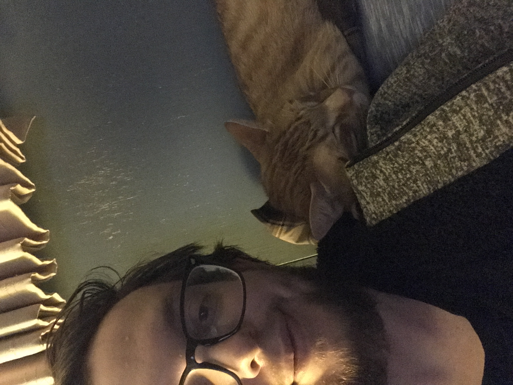

About Me
Hi! My name is Tanner Millican. I'm 24, married, and have three cats. I've had quite a few jobs, but my most recent one was as a POS field technician. I've always had a great fondness for computers and technology in general. I love all forms of art, especially creating it. Drawing and painting are my absolute favorite forms of making art. In fact, as a small child, my dream was to become a famous artist on the level of Michelangelo, Van Gogh, and the like.
One of my favorite activities is playing an online MMORPG called Runescape. I've played it since I was at least 12. I often find myself getting lost in it for hours on end before realizing just how much time has passed. I also think it served as a great gateway into my most recent obsession.
That obsession would be Dungeons and Dragons. I absolutely love the concept of a table top RPG. And being set in fantasy medieval times, Dungeons and Dragons really struck a cord with me. Sadly, my group has dissolved and I've had trouble finding another group to play in (seeing as how I live in such a small town).